La récente vague d'innovations en intelligence artificielle redéfinit les frontières technologiques, englobant aussi bien l'optimisation des outils du quotidien que les avancées majeures en robotique et en génération visuelle. Google redéfinit l'expérience utilisateur de son application de navigation grâce à l'intégration de Gemini, transformant l'outil de cartographie en un véritable agent conversationnel contextuel capable de planifier des voyages, d'analyser des avis et d'offrir une navigation immersive en 3D ultra-détaillée. Parallèlement, le secteur de la robotique repousse ses limites physiques avec l'émergence de machines novatrices, à l'instar du cheval robotique quadrupède de Deep Robotics et des robots humanoïdes sur roues de Reflex Robotics, capables d'exécuter des tâches de manipulation fine en cuisine ou en milieu industriel.
Dans l'univers de la création visuelle par IA, la dynamique s'accélère avec l'émergence de technologies capables de produire des séquences complexes et multi-angles en un minimum de temps. Le nouveau modèle **Shotverse** illustre cette révolution en générant des vidéos cinématographiques composées de plans multiples et de transitions fluides en une seule et unique génération, tout en garantissant une stricte cohérence des personnages. L'approche méthodologique repose sur un entraînement intensif réalisé exclusivement sur de véritables séquences cinématographiques issues de tournages réels, évitant ainsi la dégradation qualitative inhérente à l'utilisation de données synthétiques.
Pour les créateurs de contenu et les réalisateurs vidéo, ces innovations ouvrent des perspectives inédites en matière de productivité et de mise en scène. L'intégration d'outils de génération multi-plans permet de s'affranchir des contraintes du montage traditionnel plan par plan, réduisant considérablement les frictions dans le processus de pré-visualisation et de réalisation. En s'appuyant sur des workflows basés sur des modèles ouverts et des pipelines d'inférence robustes, les créateurs disposent désormais de leviers puissants pour concevoir des récits visuels immersifs, dynamiques et d'une qualité esthétique comparable aux standards professionnels du cinéma.
Cette semaine dans la recherche en IA a été absolument folle. Google intègre une IA puissante directement dans Google Maps. Un nouveau système peut générer des vidéos cinématiques multi-plans en une seule génération. NVIDIA a lancé un nouveau modèle d'IA agentique massif. Il existe un outil qui peut littéralement voler des effets visuels d'une vidéo et les appliquer sur une autre.
Interface & Outils : Interface web de galerie de démonstration (EffectMaker Gallery) affichant des exemples de transfert d'effets visuels entre vidéos.
Contenu textuel & Code : Titre 'EffectMaker Gallery', pagination 'Page 1 / 7', 'Total: 131 items', boutons de navigation 'Previous Page', 'Next Page', 'Go to page', et trois sections intitulées 'Reference Video', 'Target Image' et 'Target Video'.
Action / Démonstration : Présentation de la galerie de résultats d'un outil permettant de transférer des effets visuels d'une vidéo de référence vers une image ou vidéo cible.
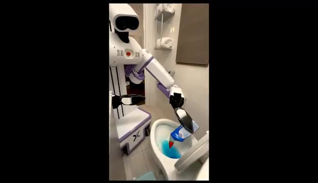
🔍 Agrandir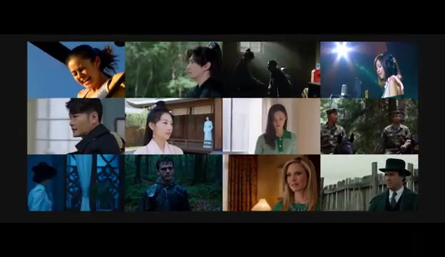
🔍 Agrandir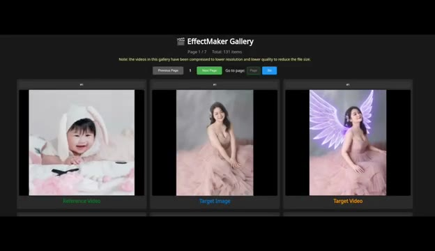
🔍 AgrandirNous voyons également des outils de clonage vocal extrêmement avancés et de très étranges démos de robots. Faisons donc le point sur tout cela avant que les robots n'apprennent à nous cuisiner à la place. C'est Pursuing AI, et vous regardez le Research Report. Commençons par Google. Cette semaine, Google a introduit plusieurs nouvelles fonctionnalités alimentées par l'IA pour Google Maps.
Interface & Outils : Interface web de Hugging Face Spaces (TADA - Text-Acoustic Dual Alignment LLM) et interface de présentation Google Maps.
Contenu textuel & Code : Textes visibles : "TADA - Text-Acoustic Dual Alignment LLM", "HumeAI/tada-3b-ml", "Load Model", "Voice Prompt", "Transcript", "Text to Speak", un graphique d'onde audio, et la mention en bas de l'image de la fillette : "*Do Not Attempt Without Professional Guidance".
Action / Démonstration : Présentation d'outils d'IA vocale, démonstration vidéo d'un robot quadrupède monté par une enfant, puis animation graphique de la fonctionnalité de recherche IA pour Google Maps.
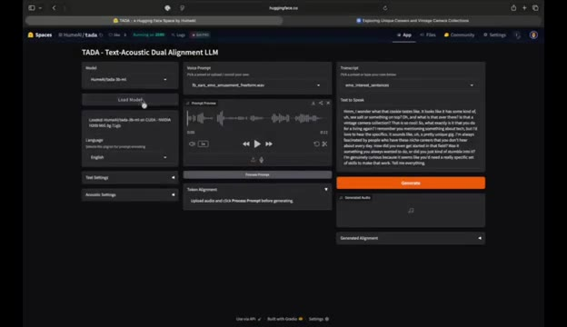
🔍 Agrandir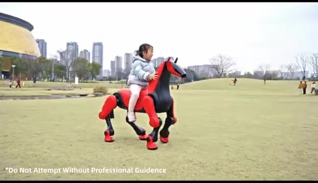
🔍 Agrandir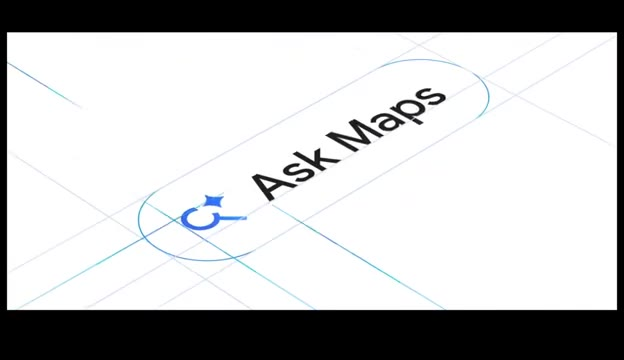
🔍 AgrandirLa première s'appelle Ask Maps. Considérez-le comme un assistant IA intégré directement dans l'application Maps. Au lieu de chercher manuellement des endroits comme un homme des cavernes, vous pouvez simplement poser une question à Gemini. Par exemple, vous pourriez lui demander de trouver des endroits chaleureux et esthétiques dans une zone spécifique. Le système analyse d'énormes quantités d'informations et vous donne des recommandations personnalisées.
Interface & Outils : Application mobile Google Maps intégrant l'assistant IA Gemini (Ask Maps).
Contenu textuel & Code : Texte affiché : "Search here", "Ask Maps", "Home", "Restauran...", "Birdland Jazz Club", "Times Square", et les bulles de dialogue de l'assistant IA proposant des recommandations à Chelsea.
Action / Démonstration : Présentation de la fonctionnalité de recherche conversationnelle "Ask Maps" sur Google Maps avec des requêtes en langage naturel et des suggestions de lieux et de tables.
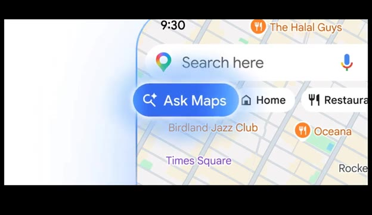
🔍 Agrandir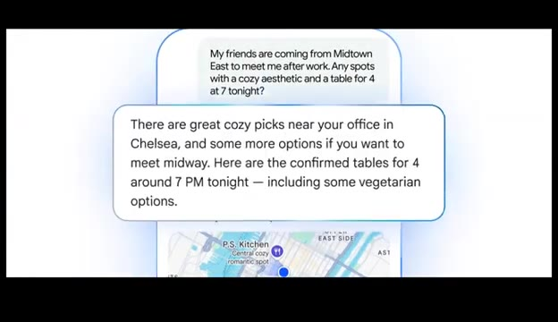
🔍 AgrandirMais voici la partie intéressante. Elle ne se contente pas de lister des restaurants ou des emplacements. L'IA lit réellement les avis et les commentaires, extrait des informations utiles et résume les informations clés pour vous. Et comme Google Maps a déjà accès à des quantités astronomiques de données, du trafic en temps réel, des milliards de photos, des avis, des fiches d'établissement et des détails de localisation, l'IA peut générer des suggestions étonnamment détaillées.
Interface & Outils : Interface de l'application Google Maps sur mobile et écrans de présentation graphique animée.
Contenu textuel & Code : Textes visibles : "Willow Vegan Bistro", "4.7", "Open - Closes 10 PM", "abcV", "People call the mushroom walnut bolognese a must-order", "Real-time traffic", "Crash ahead", "Imagine a map that's more".
Action / Démonstration : Démonstration visuelle des fonctionnalités d'IA et de résumé d'avis de Google Maps, illustrée par des captures d'interface mobiles et des infographies dynamiques.
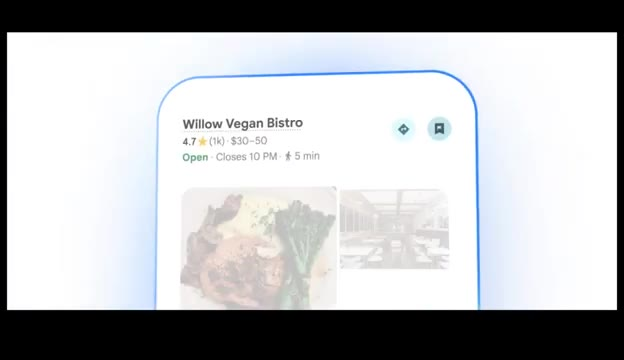
🔍 Agrandir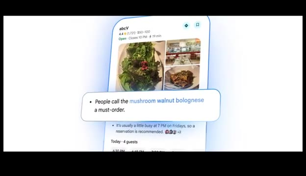
🔍 Agrandir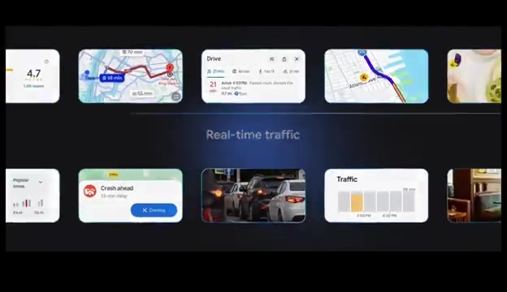
🔍 Agrandir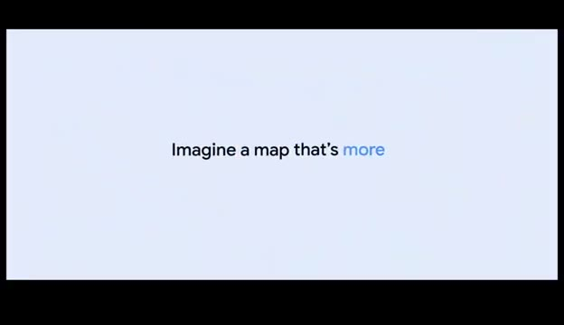
🔍 AgrandirUn autre exemple est la planification de voyage. Vous pourriez demander à l'assistant d'aider à planifier un voyage en voiture, et il générera un itinéraire complet. Il peut suggérer des itinéraires, mettre en valeur des arrêts intéressants en chemin, et recommander des activités ou des lieux incontournables. En gros, votre agent de voyage vient d'être remplacé par un chatbot. Google a également introduit une autre fonctionnalité appelée Navigation Immersive.
Interface & Outils : Application Google Maps (fonctionnalité Ask Maps et Navigation Immersive) sur smartphone et système de navigation.
Contenu textuel & Code : Texte « Hi, Elise. Ask anything, about anywhere. » avec des suggestions de trajets et un clavier virtuel. Sur la carte GPS : indications de direction (« Seneca St »), heure d'arrivée, vitesse et nom des parcs.
Action / Démonstration : Présentation de la recherche d'itinéraire par IA avec l'assistant Google Maps suivie de la démonstration de la navigation immersive.
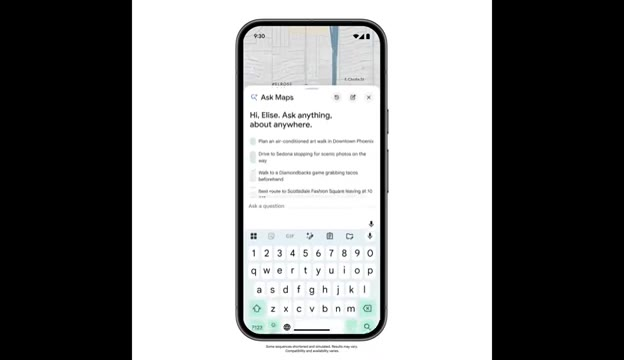
🔍 Agrandir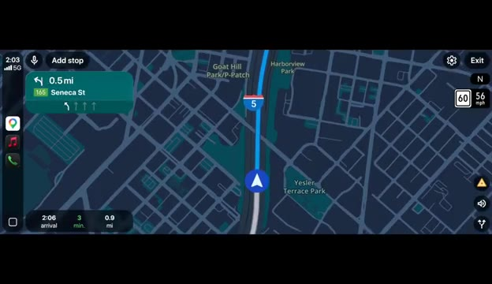
🔍 AgrandirCela améliore considérablement la navigation en fournissant un guidage visuel en 3D extrêmement détaillé. Au lieu de simples flèches sur une carte, vous pouvez réellement voir des vues réalistes des bâtiments, des routes, du terrain et des structures environnantes. Le système met en évidence des détails importants tels que les changements de voie, les insertions sur autoroute et les ponts.
Interface & Outils : Interface de système de navigation automobile en 3D (type CarPlay / Google Maps immersif).
Contenu textuel & Code : Indications de direction ("0.3 mi Seneca St", "400 ft Seneca St"), temps d'arrivée ("2:06 arrival 3 min 0.9 mi"), limitations de vitesse ("60", "25"), noms de lieux ("Goat Hill Park", "5th Ave", "Seneca St", "Freeway Park").
Action / Démonstration : Démonstration visuelle d'un guidage de navigation GPS en 3D montrant le trajet d'un véhicule à travers un environnement urbain modélisé en trois dimensions.
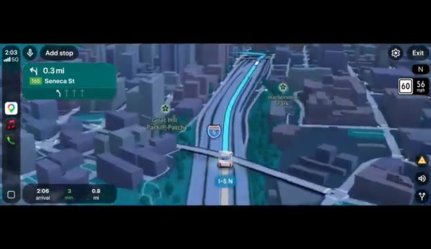
🔍 Agrandir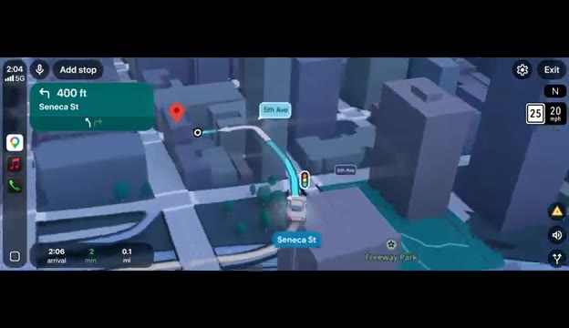
🔍 AgrandirPar exemple, s'il y a une voie de tourne-à-gauche spécifique que vous devez emprunter, le système la met clairement en surbrillance. Et parfois, il vous avertit même qu'immédiatement après le virage, vous devrez changer de voie à nouveau, ce qui est extrêmement utile, surtout si vous êtes du genre de conducteur qui panique et traverse quatre voies à la dernière seconde. La navigation sur autoroute est un autre domaine où cela brille.
Interface & Outils : Application de navigation mobile avec interface cartographique 3D épurée.
Contenu textuel & Code : Indications de direction en haut avec "15th St", tracé bleu de l'itinéraire suggéré depuis "Market St", panneaux de limitation de vitesse (25 / 20 mph), et estimation du temps de trajet (2 min, 500 ft, 2:06 PM).
Action / Démonstration : Affichage d'une simulation de navigation GPS illustrant le guidage précis sur une intersection avec mise en surbrillance de la voie.
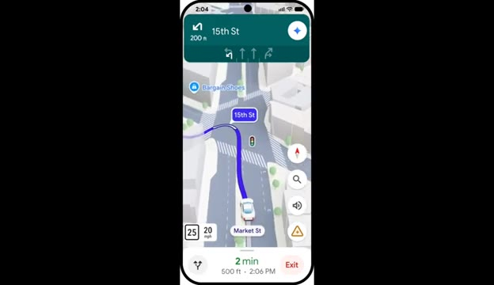
🔍 AgrandirQuand il y a des tonnes de voies, il n'est souvent pas clair où aller. Le système met en surbrillance la bonne voie, afin que les conducteurs puissent éviter les changements de voie chaotiques de dernière seconde. Et lorsque vous arrivez à destination, l'application peut également afficher les zones de stationnement à proximité et estimer le temps de marche entre le parking et votre emplacement final. Selon Google, ces fonctionnalités sont actuellement en cours de déploiement à travers les États-Unis et seront bientôt étendues à d'autres régions.
Interface & Outils : Interface mobile de navigation GPS (type Google Maps) et document de présentation textuelle officiel.
Contenu textuel & Code : Texte à l'écran : "Master the final stretch of your drive with helpful guidance..." et "Immersive Navigation starts rolling out today across the U.S...". Sur l'interface mobile : indications de voies, vitesse (55 mph, 3 mph), temps de trajet estimé (16 min).
Action / Démonstration : Démonstration de l'interface de navigation avec indication des voies complexes et présentation textuelle du déploiement géographique de la fonctionnalité.
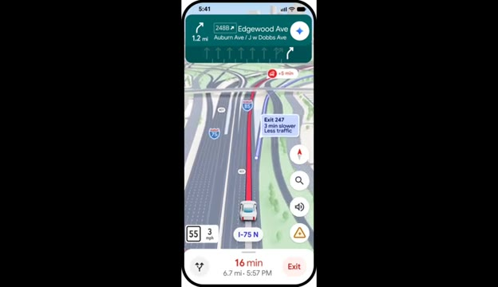
🔍 Agrandir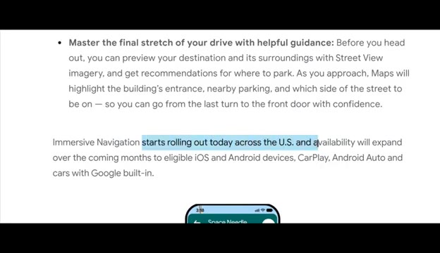
🔍 AgrandirMaintenant, parlons des robots. Une entreprise de robotique chinoise appelée Deep Robotics a récemment présenté une machine très inhabituelle. Au lieu de construire un robot humanoïde, ils ont construit un cheval robotique. Oui, un cheval robotique. Le robot peut marcher, trotter et même se dresser sur ses pattes arrière, exactement comme un vrai cheval.
Interface & Outils : Présentation face caméra sans partage d'écran (extraits vidéo d'illustration de robots uniquement)
Contenu textuel & Code : Logos "DEEP Robotics" et texte promotionnel "REDEFINING WHAT'S POSSIBLE" incrustés à l'écran.
Action / Démonstration : Démonstration visuelle du cheval robotique se déplaçant et se dressant sur ses pattes arrière dans un parc urbain.
Il est également assez robuste pour supporter le poid d'un passager adulte. Les ingénieurs ont même conçu les pattes pour ressembler à la véritable anatomie d'un cheval. L'entreprise n'a pas encore totalement expliqué les cas d'usage pratiques, mais des robots de ce type pourraient potentiellement être utilisés dans des environnements de divertissement comme les parcs à thèmes. Il est intéressant de noter que le lancement coïncide également avec l'année du cheval dans le zodiaque chinois, ce qui pourrait donc être en partie une innovation en robotique et en partie un coup marketing.
Interface & Outils : Présentation vidéo d'illustration sans interface logicielle ni partage d'écran
Contenu textuel & Code : Vidéo montrant un robot quadrupède en forme de cheval rouge et noir évoluant sur une pelouse, avec du texte incrusté (*Do Not Attempt Without Professional Guidance et YEAR OF HORSE 2026).
Action / Démonstration : Démonstration visuelle du robot cheval robotique en mouvement sur l'herbe et transportant un passager.
Une autre démonstration de robotique est venue d'une startup appelée Reflex Robotics, basée à New York. Ils construisent des robots humanoïdes polyvalents conçus pour les entrepôts, les usines et éventuellement les maisons. Mais leur robot a une particularité. Au lieu de marcher sur des jambes, il utilise une base à roulettes. Cela signifie qu'il ne peut pas monter les escaliers ni naviguer sur des terrains accidentés.
Interface & Outils : Vidéo de démonstration montrant un prototype de robot en conditions réelles (mode "2X SPEED" affiché en bas à gauche).
Contenu textuel & Code : Affichage de la mention "2X SPEED" en bas à gauche de la vidéo. Le robot humanoïde à bras articulés et base roulante est en action dans un intérieur domestique (salle de bains).
Action / Démonstration : Le robot utilise ses bras articulés pour interagir avec des objets du quotidien (flacon, brosse) près des toilettes, démontrant ses capacités de manipulation dans un espace restreint.
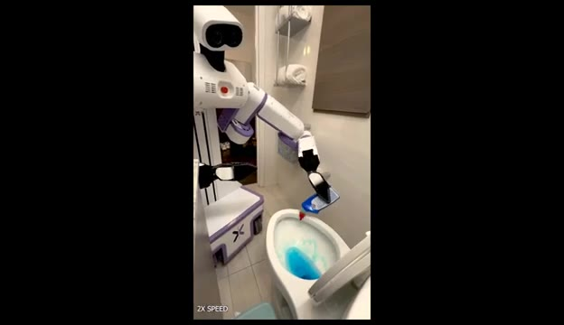
🔍 Agrandir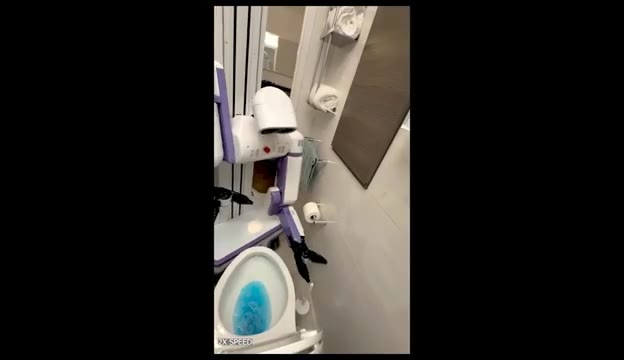
🔍 Agrandir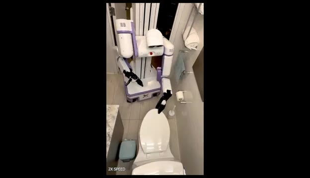
🔍 AgrandirMais sur des surfaces planes, il peut se déplacer très efficacement. Lors de démonstrations, le robot exécute une variété de tâches quotidiennes. Il peut ouvrir des stores de fenêtres, préparer des ingrédients dans la cuisine, couper des fruits, verser des liquides, ajouter des ingrédients en poudre et placer des objets dans un blender. Ces tâches semblent simples pour les humains, mais pour les robots, elles sont extrêmement difficiles car elles exigent un contrôle précis des mains et une manipulation minutieuse des objets.
Interface & Outils : Vidéo de démonstration robotique montrant le robot domestique blanc et violet "REFLEX" en action dans un intérieur réel.
Contenu textuel & Code : Mentions textuelles incrustées dans les coins de l'écran : "5X SPEED" et "2X SPEED", ainsi que le logo ou nom "REFLEX" sur le châssis du robot.
Action / Démonstration : Le robot effectue des tâches ménagères et culinaires : déplacement sur surface plane, manipulation d'objets, découpe et préparation d'aliments dans une cuisine.
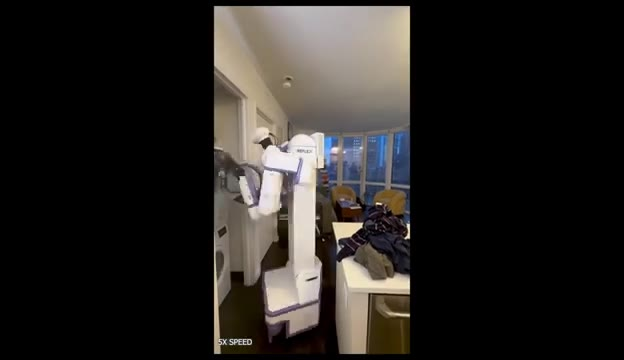
🔍 Agrandir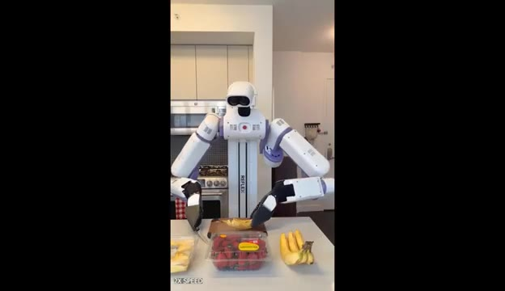
🔍 Agrandir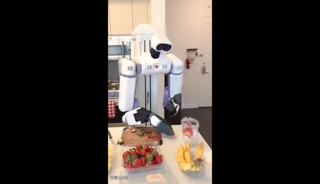
🔍 Agrandir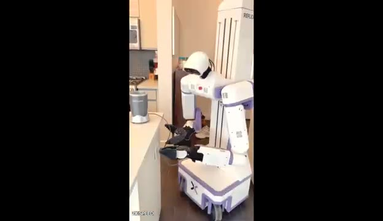
🔍 AgrandirDans une autre démo, le robot ouvre un paquet de steak, le place dans une poêle, le retourne pendant la cuisson et ajoute du beurre. Le résultat est un plat cuisiné prêt à être servi. Maintenant, pour être juste, les démonstrations contiennent des coupes entre les scènes, il n'est donc pas tout à fait clair quelle partie du processus a été automatisée en continu, mais les capacités restent très impressionnantes. Passons maintenant à la génération de vidéos par IA ; un nouveau système appelé Shotverse peut générer des vidéos cinématographiques à plans multiples en une seule génération, au lieu de produire une seule scène continue, le modèle...
Interface & Outils : Démonstration vidéo de robotique et de génération de vidéo par IA (Shotverse).
Contenu textuel & Code : Texte affiché à l'écran : "AI Video Generation" et mention "2X SPEED" dans les vidéos de démonstration du robot.
Action / Démonstration : Le robot de cuisine manipule des ingrédients et des ustensiles pour cuisiner un steak, puis une transition introduit des exemples de génération vidéo cinématique multi-plans par IA.
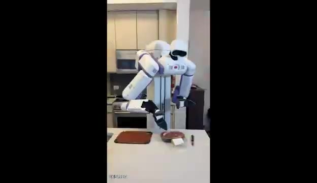
🔍 Agrandir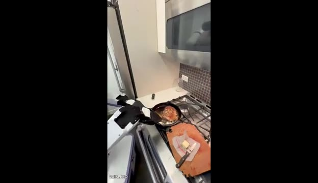
🔍 Agrandir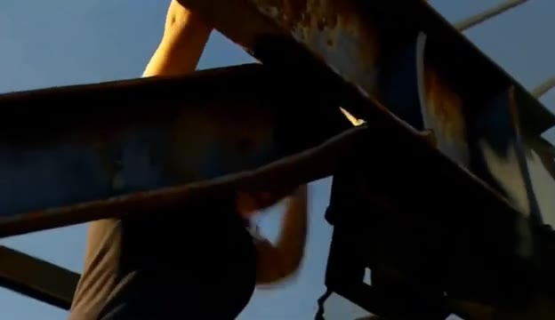
🔍 Agrandirbascule automatiquement entre plusieurs angles de caméra et plans, exactement comme un vrai film. Dans l'exemple montré par les chercheurs, la vidéo générée effectue des transitions fluides entre les scènes tout en maintenant la cohérence des personnages, ce qui confère au résultat un rendu beaucoup plus cinématographique par rapport aux modèles de vidéo par IA traditionnels. La raison pour laquelle cela fonctionne si bien est que le modèle a été entraîné sur de véritables séquences cinématographiques. Selon les chercheurs, l'entraînement sur des vidéos générées par IA de manière synthétique réduit en réalité la qualité des résultats. Le projet sera éventuellement entièrement en open source. Les développeurs prévoient de publier le modèle, le jeu de données, le pipeline d'entraînement et l'inférence.
Interface & Outils : Présentation de recherche / Article web et exemples vidéo de ShotVerse
Contenu textuel & Code : Texte à l'écran : "Training Data", "Synthetic supervision hurts film-like rendering. Aesthetics drops noticeably and semantics slightly weakens, suggesting real cinematic triplets provide crucial composition/lighting cues beyond what synthetic triplets capture.", "w/ Synthetic Data", "Real Cinematic Data (Ours)", "Code Release Plan", et bloc BibTeX "@misc{yang2026shotverseadvancingcinematiccamera...}"
Action / Démonstration : Démonstration visuelle de vidéos générées avec différentes techniques d'entraînement et affichage du planning de publication du code de recherche.
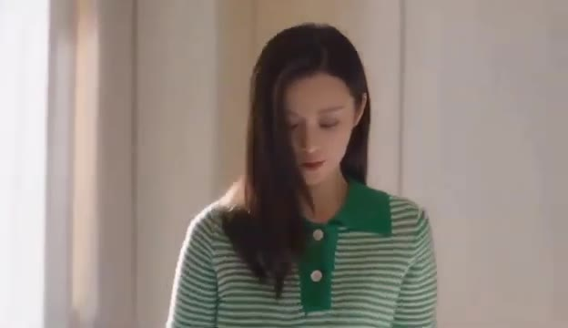
🔍 Agrandir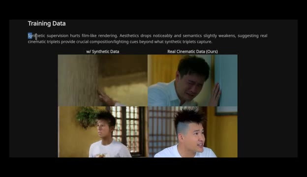
🔍 Agrandir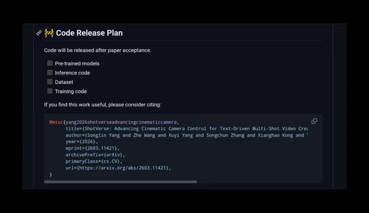
🔍 Agrandircodez une fois que l'article de recherche est officiellement accepté. Et c'est tout pour les actualités de la recherche en IA de cette semaine. Si vous souhaitez explorer plus en profondeur l'un de ces projets, je mettrai les liens dans la description. Merci d'avoir regardé.
Interface & Outils : Écran de conclusion de la vidéo avec illustration animée, sans interface logicielle ni démonstration active.
Contenu textuel & Code : Illustration d'un cerveau connecté à une puce électronique portant le logo "PAI" dans un cercle néon bleu, avec le texte "The Resea" partiellement visible à l'écran.
Action / Démonstration : Affichage d'un écran graphique de clôture de la vidéo de la chaîne Pursuing AI.